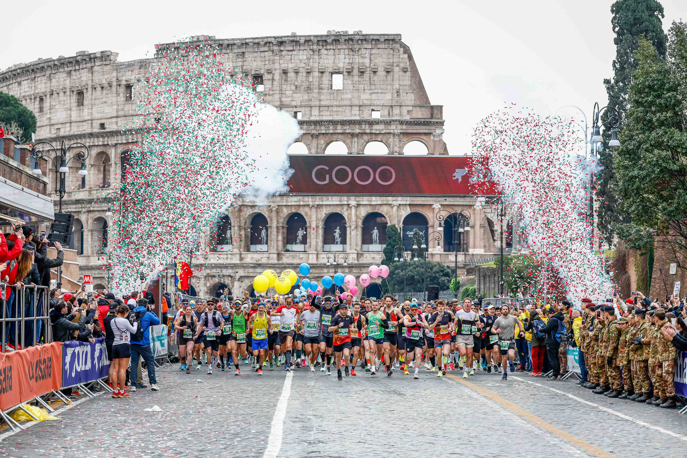
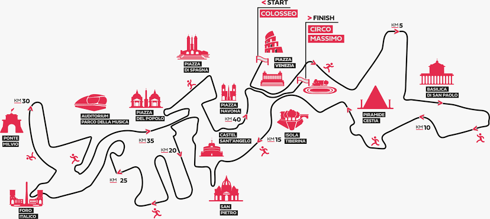
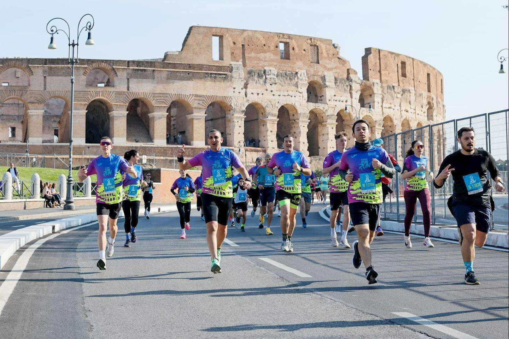

義大利羅馬馬拉松 (Run Rome The Marathon)
流動的露天博物館 ｜ 穿梭兩千年帝國遺跡與巴洛克榮耀的古典跑旅
歐洲最具歷史震撼力的城市馬拉松之一。賽事以羅馬競技場為宏偉背景出發，終點設於古羅馬戰車競賽場馬克西穆斯競技場，穿梭於聖彼得大教堂、聖天使城堡與特雷維噴泉，被全球跑者譽為「奔跑於文明史詩中的朝聖之旅」。
• 世界遺產沉浸：全程經過數十處世界級歷史古蹟，視覺震撼無與倫比。
• 玄武岩石板路考驗：穿插 3 至 7 公里古老聖彼得石（Sampietrini）路面。
• 免抽籤友善報名：採階梯式報名，提供海外跑者免體檢之「非競技組」直通。

賽事基本資訊與核心規格
平坦地勢與 7 小時超長時限，兼顧古蹟維護節奏與慢旅完賽體驗
• 舉辦月份：每年 3 月中旬週日。
• 關門限時：7 小時（超寬裕）。
• 參賽規模：上限 30,000 名跑者。
• 累計爬升：約 20 公尺（約 60 英尺）。
• 累計下降：約 25 公尺。
• 地形趨勢：極度平緩之城市河谷地勢。
• 路面屬性：平整柏油路 ＋ 石板路。
• 難度分級：中等（考驗腳踝穩定）。
• 完賽率：歷年常態高達 95% 以上。
• 標籤認證：FIDAL 義大利金標籤。
• 賽事體系：世界田總（WA）認可賽事。
• 合作聯盟：AbbottWMM 官方合作夥伴。
賽道結構與關鍵魔王路段剖析
帝國廣場出發，穿梭梵蒂岡聖伯多祿大殿，迎戰老城區玄武岩考驗
• 0-10km（古典地標巡航）：帝國廣場背對競技場出發，行經威尼斯廣場與金字塔，路面平坦寬闊。
• 10-25km（台伯河與梵蒂岡）：沿台伯河岸前進，直面聖天使堡與聖伯多祿大殿協和大道。
• 25-35km（老城北段）：穿過奧古斯都帝王陵墓與人民廣場，進入沉穩配速段落。
• 35-42.195km（古蹟核心衝線）：經西班牙階梯、特雷維噴泉、納沃納廣場，在競技場衝線。
• 痛點剖析：最後 10 公里穿梭古城核心，數百年玄武岩凹凸多縫，雨天易滑且極耗腳踝肌群。
• 通關策略：選用抓地強與高緩震跑鞋；石板路縮小步幅、提高步頻，避免轉彎急煞。

報名管道與義大利體檢合規指南
先報先得階梯制定價：海外跑者必懂的「非競技組」免體檢通關秘訣
• 早鳥優惠期：€89 至 €99（名額先到先得）。
• 標準與晚鳥：€109 至 €139+。
• 額滿機制：上限 30,000 人額滿即止。
• 轉讓條款：賽前可付費轉讓或延期。
• 適用對象：追求完賽體驗之海外跑者。
• 免除手續：免買 RUNCARD、免開立體檢證明。
• 報名手續：僅需於 ENDU 簽署健康切結聲明。
• 成績紀錄：個人完賽成績正式記錄並獲獎牌。
• 適用對象：爭取官方總排名與分組獎項者。
• 認證要求：持有田協證照或購買 RUNCARD（€30）。
• 體檢規範：需嚴格開立包含心電圖、肺活量、尿檢之義大利官方運動體檢表。
• 審核平台：賽前 10 天上傳審核。
• Run4Rome 接力賽：4 人分擔 42km 全馬。
• Fun Run 5k：賽前一天於競技場舉行。
• 參賽門檻：歡樂跑不設任何體能與年齡限制。
• 親友同樂：極適合全家或同行親友參與。
交通後勤、五大住宿選址與 Expo 領物
起終點皆臨近地鐵 B 線：依預算與拖行李便利度鎖定住宿首選
• 起點位置：帝國廣場大道（鄰近地鐵 B 線 Colosseo 競技場站）。
• 終點位置：馬克西穆斯競技場（鄰近地鐵 B 線 Circo Massimo 站）。
• 兩地關聯：起點與終點僅相距約 1 公里，步行或搭乘一站地鐵即達。
• 賽日交通：比賽當日地鐵正常運行，建議賽前一小時抵達集結分區。
• 首選 A 區（競技場與蒙蒂區 Monti）：距離起終點最近，步行即可往返，巷弄充滿義式餐酒館。
• 首選 B 區（特米尼車站 Termini）：機場快線直達，拖行李最輕鬆，飯店選擇最多且性價比高。
• 老城區提醒：萬神殿周邊古風優雅，但皆為石板路，拖重行李移動較為費力。
• 博覽會地點：羅馬展覽中心（Fiera di Roma）或官方指定會展中心。
• 領物時限：比賽前週五至週六連續兩天開放親領。
• 必備文件：攜帶護照正本與 ENDU 報名確認函領取物資包。
• 物資禮包：內含官方技術紀念跑衣、背包、號碼布與晶片。
氣候數據、跑鞋選型與水站補給
地中海早春宜人氣候，強化緩震防滑應對歷史石磚路面
• 氣溫區間：9°C 至 17°C（早春微涼至溫暖舒適）。
• 降雨機率：地中海氣候，晴天居多，降雨機率約 20%。
• 日照情況：後半程接近中午日照增強，紫外線較為強烈。
• 起跑體感：上午 8:30 起跑約 10°C，短袖短褲體感極佳。
• 跑鞋首選：強烈建議選用中底緩震充足、大底抓地橡膠優異之旗艦鞋款。
• 避雷提醒：切忌穿著大底極薄、過度追求極致輕量之鞋款，否則石板路震盪易造成足底筋膜疲勞。
• 防曬準備：佩戴透氣運動遮陽帽與太陽眼鏡，應對正午台伯河沿岸反射光。
• 腳踝支撐：行經石磚縫隙時保持重心穩定，避免大角度劇烈變向。
• 水站設置：每 5 公里設有飲用水、電解質運動飲料站。
• 固態補給：後半程提供水果（香蕉、橘子）、餅乾與在地補給。
• 能量自備：建議隨身自備 3 至 4 條能量膠，於 10km、20km、30km 定時補充。
• 海綿站：賽道設有降溫海綿站，中午回暖時可擦拭降溫。
賽後文化巡禮與系列下一站
戴上古羅馬浮雕獎牌，享用道地義式培根蛋麵與冰淇淋，啟航下一場阿爾卑斯挑戰
• 正統羅馬美食慶功：換上休閒裝走進蒙蒂區傳統小餐館，品嘗正宗羅馬乾酪胡椒義大利麵（Cacio e Pepe）與酥脆培根蛋麵（Carbonara）。
• 義式冰淇淋（Gelato）：賽後漫步至萬神殿旁的百年老店，用雙球開心果冰淇淋犒賞 42 公里的努力。
• 許願池與梵蒂岡散策：翌日前往特雷維噴泉投幣許願，悠閒漫步聖彼得廣場，動態排酸回味昨日奔馳。
